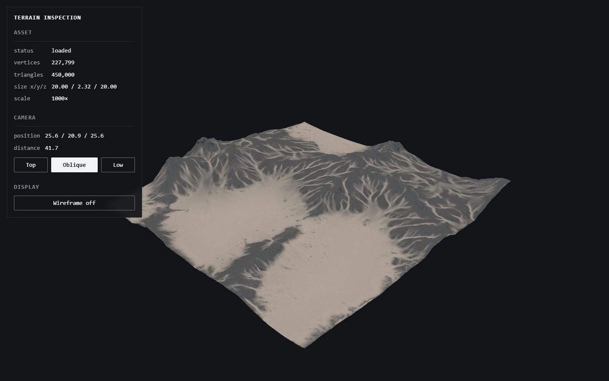
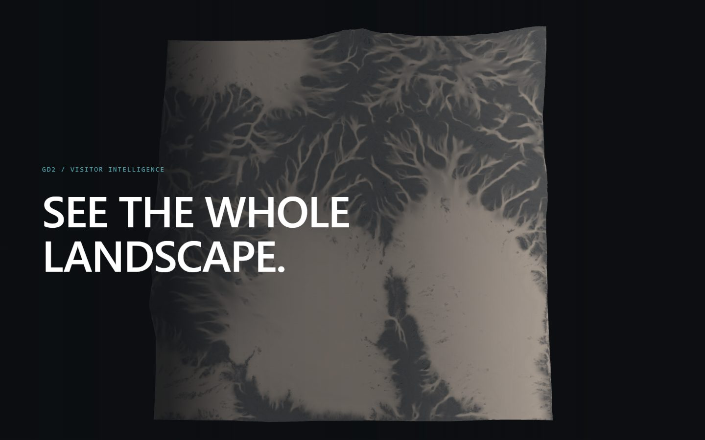
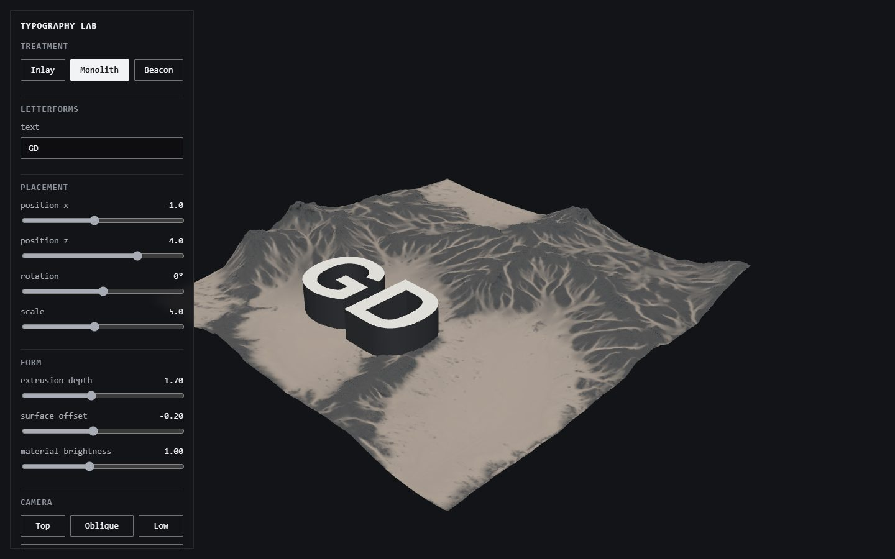
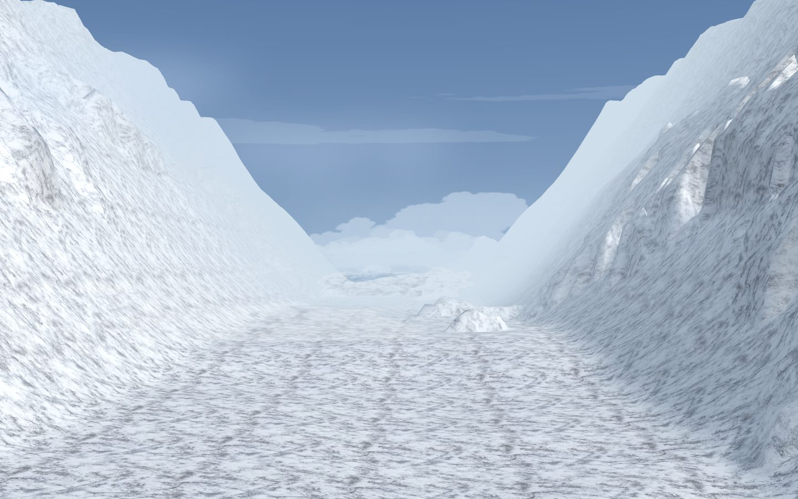
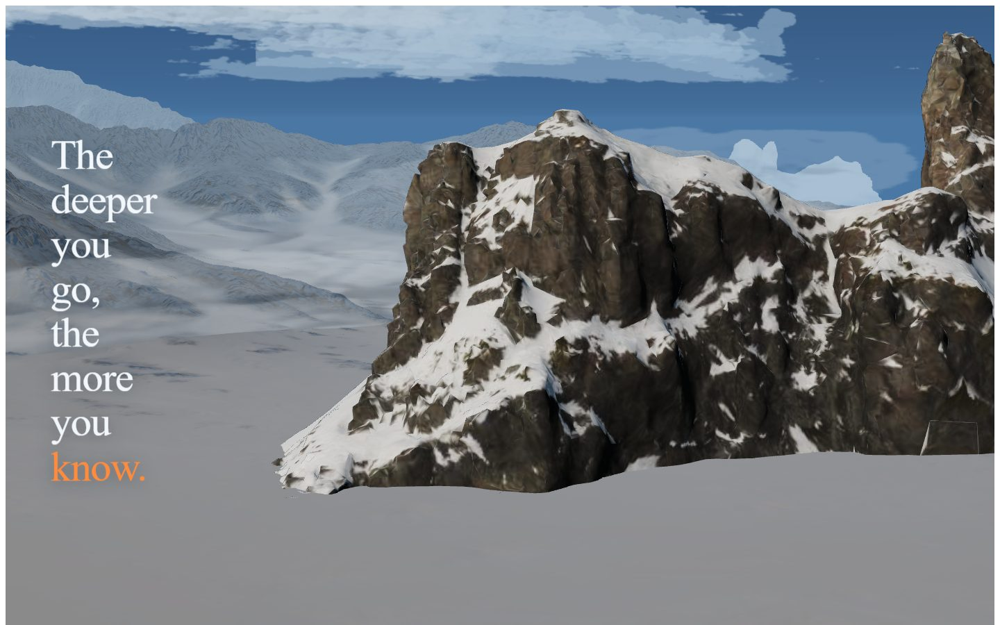
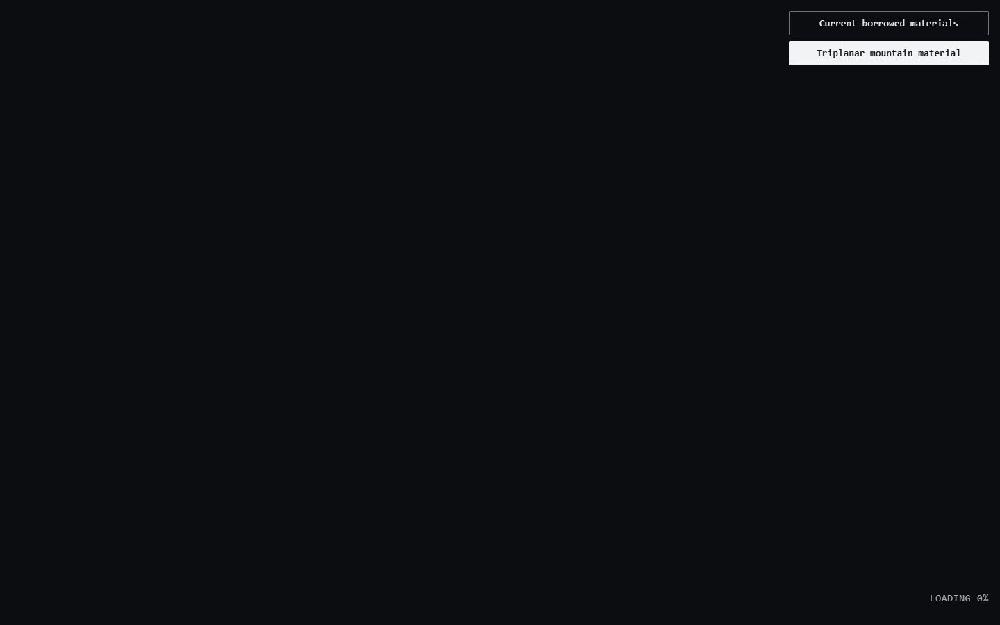
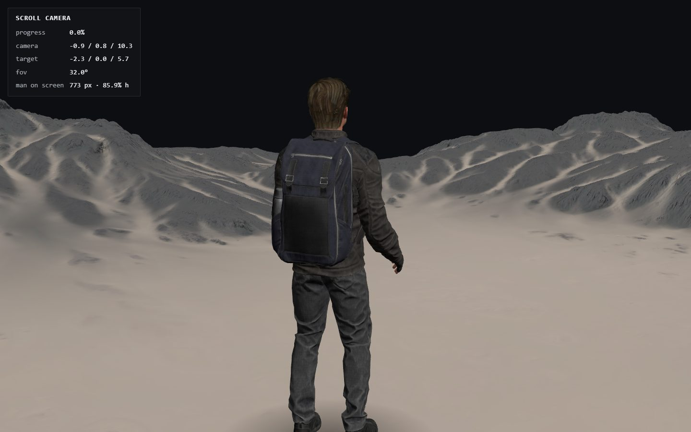
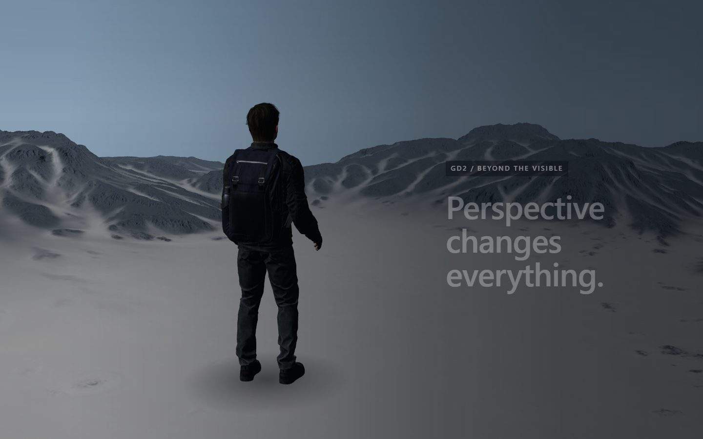
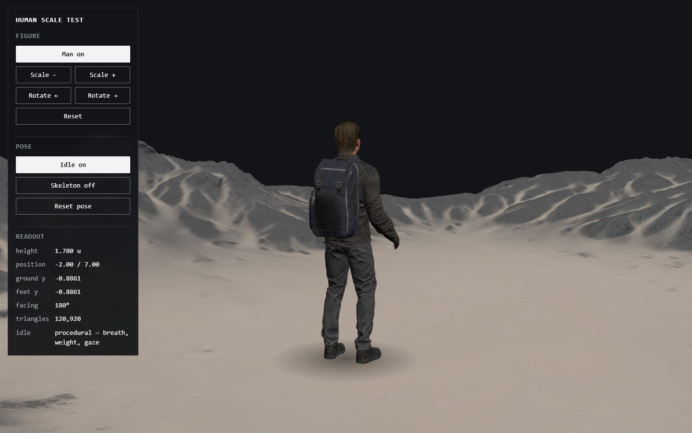

aan test 1
9 versions in this folder.
Not a design. A reusable Three.js / GSAP pipeline for a heavy terrain asset, plus throwaway presentation experiments on top of it. One Vite entry routes all nine by query parameter, so no mode pays for another's code.
Each card opens one version. All six labs.
-

/ — inspection viewer
Neutral technical viewer — OrbitControls, debug readout, wireframe toggle, Top/Oblique/Low cameras. The reference for judging the asset itself.
The terrain as delivered: 227,799 vertices, 450,000 triangles, normalised to a 20-unit span.
needs a server
-

?cinematic=1
300vh scroll, pinned WebGL stage, one scrubbed GSAP timeline driving the whole camera move, HTML typography over the canvas.
Temporary motion study. Its scrim strength is derived from measured contrast against the terrain's brightest region, not chosen by eye.
needs a server
-

?typeLab=1
Giant "GD" as real TextGeometry placed onto the terrain by raycasting. Three treatments (Inlay / Monolith / Beacon), full control panel, slow auto camera.
Whether type can sit in the landscape as geometry rather than over it as HTML.
its typeface JSON is generated from a licensed system font and must be regenerated from an OFL face before anything ships
needs a server
-

?mountainLab=1
Loads the 12 Unreal-derived mountains from one GLB with named nodes, arranges them as a foreground/midground/background corridor, plays a 2.5s assembly on load, then hands the camera to scroll.
The approved 12-mountain composition. No clouds, no ocean, no diver, no colour grading.
needs a server
-

?mountainLabV2=1
A deliberate break from V1, not a patch on it. Real scanned ground: the 450k-triangle photogrammetry landscape with 2K albedo/normal/AO, used instead of V1's procedural plane.
Whether real erosion and albedo variation fix the white carpet that every attempt to patch V1's floor produced.
V1 is untouched at ?mountainLab=1
needs a server
-

?mountainMaterialTest=1
Shows the approved 12-mountain composition and switches between the borrowed Unreal materials baked into the GLB and a new world-space triplanar rock/snow material.
Whether the borrowed materials can be replaced. No man, no route, no landing copy, no ocean.
does not currently run: it reads CFG.scene.key.direction, and mountain-composition.js now describes the key light as azimuth/elevation. Verified 2026-09-03 — the preview is the loading state, which is as far as the page gets.
needs a server
-

?manScroll=1
One feeling: you were standing beside this person, and then you found out how big the world around him is. GSAP owns one scrubbed value driving camera, look-at and FOV; the rig owns bones on frame delta. GSAP never touches a bone.
The mechanical baseline for the character reveal.
needs a server
-

?manScrollArt=1
Art-direction experiment on the same mechanics. Everything reusable is imported, never edited — loadTerrain, CharacterRig, the placement and the scrub pattern.
What art direction alone changes, with the mechanics held identical to manScroll.
needs a server
-

?manTest=1
Drops the Fab "Survival Character FREE" onto the normalised terrain to judge visual quality, scale and pose. Transforms split three ways — placement, facing, and the rig's own bones — so a camera pass and the idle can never overwrite each other.
Human scale against the terrain. Not part of any design.
needs a server
tools/versions.json · 2026-09-06